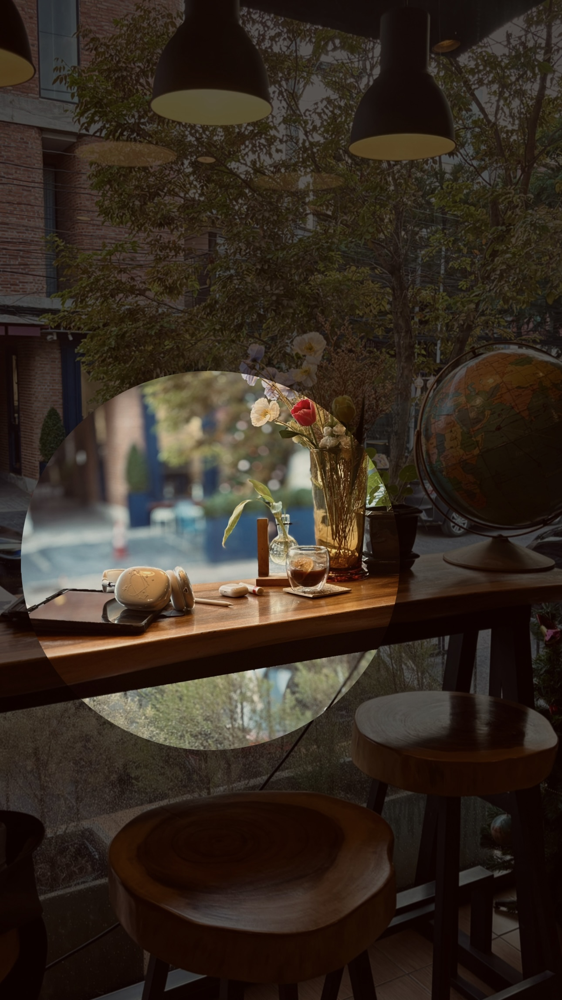

See next slides for the content of each page.
Hey there! Welcome to my little corner of the web. This site's pretty simple, it's just me sharinh a few things I really enjoy.
First off, I'm a huge coffee lover. Seriously, that first cup in the morning is pure magic. And if you're ever in Thailand, you bet I'm out there cafe hopping! There's just something about finding those cozy, unique spots with amazing coffee.
Then there's hiking. I've been on so many hikes, and I genuinely think it's such a good bonding time if you're with friends. But even when I go alone, it's a fantastic way to just discover myself, clear my head, and really appreciate the quiet.
And that brings me to photography. For me, photos aren't just pictures...they're like little time capsules of memories. I truly believe that without photographs, we'd slowly forget each other, and all those precious feelings from those moments would just fade away. So yeah, I'm always trying to capture those bits of life so we can live through them again and again.
Hope you enjoy looking around!
